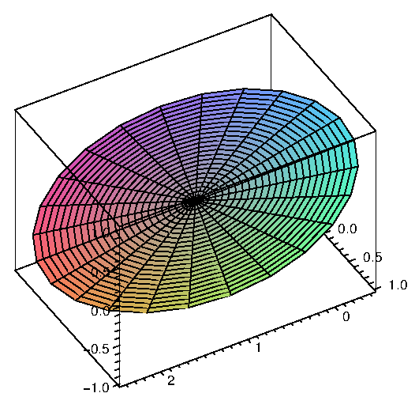

We have dealt extensively with vector equations for curves, ${\bf r}(t)=\langle x(t),y(t),z(t)\rangle$. A similar technique can be used to represent surfaces in a way that is more general than the equations for surfaces we have used so far. Recall that when we use ${\bf r}(t)$ to represent a curve, we imagine the vector ${\bf r}(t)$ with its tail at the origin, and then we follow the head of the arrow as $t$ changes. The vector "draws'' the curve through space as $t$ varies.
Suppose we instead have a vector function of two variables, $${\bf r}(u,v)=\langle x(u,v),y(u,v),z(u,v)\rangle.$$ As both $u$ and $v$ vary, we again imagine the vector ${\bf r}(u,v)$ with its tail at the origin, and its head sweeps out a surface in space. A useful analogy is the technology of CRT video screens, in which an electron gun fires electrons in the direction of the screen. The gun's direction sweeps horizontally and vertically to "paint'' the screen with the desired image. In practice, the gun moves horizontally through an entire line, then moves vertically to the next line and repeats the operation. In the same way, it can be useful to imagine fixing a value of $v$ and letting ${\bf r}(u,v)$ sweep out a curve as $u$ changes. Then $v$ can change a bit, and ${\bf r}(u,v)$ sweeps out a new curve very close to the first. Put enough of these curves together and they form a surface.
Example 16.6.1 Consider the function ${\bf r}(u,v)=\langle v\cos u,v\sin u, v\rangle$. For a fixed value of $v$, as $u$ varies from 0 to $2\pi$, this traces a circle of radius $v$ at height $v$ above the $x$-$y$ plane. Put lots and lots of these together,and they form a cone, as in figure 16.6.1.
Example 16.6.2 Let ${\bf r}=\langle v\cos u, v\sin u, u\rangle$. If $v$ is constant, the resulting curve is a helix (as in figure 13.1.1). If $u$ is constant, the resulting curve is a straight line at height $u$ in the direction $u$ radians from the positive $x$ axis. Note in figure 16.6.2 how the helixes and the lines both paint the same surface in a different way.
This technique allows us to represent many more surfaces than previously.
Example 16.6.3 The curve given by $${\bf r}=\langle (2+\cos(3u/2))\cos u, (2+\cos(3u/2))\sin u, \sin(3u/2)\rangle$$ is called a trefoil knot. Recall that from the vector equation of the curve we can compute the unit tangent $\bf T$, the unit normal $\bf N$, and the binormal vector ${\bf B}={\bf T}\times{\bf N}$; you may want to review section 13.3. The binormal is perpendicular to both $\bf T$ and $\bf N$; one way to interpret this is that ${\bf N}$ and ${\bf B}$ define a plane perpendicular to $\bf T$, that is, perpendicular to the curve; since ${\bf N}$ and ${\bf B}$ are perpendicular to each other, they can function just as $\bf i$ and $\bf j$ do for the $x$-$y$ plane. Of course, $\bf N$ and $\bf B$ are functions of $u$, changing as we move along the curve ${\bf r}(u)$. So, for example, ${\bf c}(u,v)={\bf N}\cos v+{\bf B}\sin v$ is a vector equation for a unit circle in a plane perpendicular to the curve described by $\bf r$, except that the usual interpretation of $\bf c$ would put its center at the origin. We can fix that simply by adding $\bf c$ to the original $\bf r$: let ${\bf f}={\bf r}(u) +{\bf c}(u,v)$. For a fixed $u$ this draws a circle around the point ${\bf r}(u)$; as $u$ varies we get a sequence of such circles around the curve $\bf r$, that is, a tube of radius 1 with $\bf r$ at its center. We can easily change the radius; for example ${\bf r}(u) +a{\bf c}(u,v)$ gives the tube radius $a$; we can make the radius vary as we move along the curve with ${\bf r}(u) +g(u){\bf c}(u,v)$, where $g(u)$ is a function of $u$. As shown in figure 16.6.3, it is hard to see that the plain knot is knotted; the tube makes the structure apparent. Of course, there is nothing special about the trefoil knot in this example; we can put a tube around (almost) any curve in the same way.
We have previously examined surfaces given in the form $f(x,y)$. It is sometimes useful to represent such surfaces in the more general vector form, which is quite easy: ${\bf r}(u,v)=\langle u,v,f(u,v)\rangle$. The names of the variables are not important of course; instead of disguising $x$ and $y$, we could simply write ${\bf r}(x,y)=\langle x,y,f(x,y)\rangle$.
We have also previously dealt with surfaces that are not functions of $x$ and $y$; many of these are easy to represent in vector form. One common type of surface that cannot be represented as $z=f(x,y)$ is a surface given by an equation involving only $x$ and $y$. For example, $x+y=1$ and $y=x^2$ are "vertical'' surfaces. For every point $(x,y)$ in the plane that satisfies the equation, the point $(x,y,z)$ is on the surface, for every value of $z$. Thus, a corresponding vector form for the surface is something like $\langle f(u),g(u),v\rangle$; for example, $x+y=1$ becomes $\langle u,1-u,v\rangle$ and $y=x^2$ becomes $\langle u,u^2,v\rangle$.
Yet another sort of example is the sphere, say $x^2+y^2+z^2=1$. This cannot be written in the form $z=f(x,y)$, but it is easy to write in vector form; indeed this particular surface is much like the cone, since it has circular cross-sections, or we can think of it as a tube around a portion of the $z$-axis, with a radius that varies depending on where along the axis we are. One vector expression for the sphere is $\langle \sqrt{1-v^2}\cos u,\sqrt{1-v^2}\sin u, v\rangle$—this emphasizes the tube structure, as it is naturally viewed as drawing a circle of radius $\sqrt{1-v^2}$ around the $z$-axis at height $v$. We could also take a cue from spherical coordinates, and write $\langle \sin u\cos v,\sin u\sin v,\cos u\rangle$, where in effect $u$ and $v$ are $\phi$ and $\theta$ in disguise.
It is quite simple in Sage to plot any surface for which you have a vector representation. Using different vector functions sometimes gives different looking plots, because Sage in effect draws the surface by holding one variable constant and then the other. For example, you might have noticed in figure 16.6.2 that the curves in the two right-hand graphs are superimposed on the left-hand graph; the graph of the surface is just the combination of the two sets of curves, with the spaces filled in with color.
Here's a simple but striking example: the plane $x+y+z=1$ can be represented quite naturally as $\langle u,v,1-u-v\rangle$. But we could also think of painting the same plane by choosing a particular point on the plane, say $(1,0,0)$, and then drawing circles or ellipses (or any of a number of other curves) as if that point were the origin in the plane. For example, $\langle 1-v\cos u-v\sin u,v\sin u,v\cos u\rangle$ is one such vector function. Note that while it may not be obvious where this came from, it is quite easy to see that the sum of the $x$, $y$, and $z$ components of the vector is always 1. Computer renderings of the plane using these two functions are shown in figure 16.6.4.

|
 |
Suppose we know that a plane contains a particular point $(x_0,y_0,z_0)$ and that two vectors ${\bf u}=\langle u_0,u_1,u_2\rangle$ and ${\bf v}=\langle v_0,v_1,v_2\rangle$ are parallel to the plane but not to each other. We know how to get an equation for the plane in the form $ax+by+cz=d$, by first computing ${\bf u}\times{\bf v}$. It's even easier to get a vector equation: $${\bf r}(u,v) = \langle x_0,y_0,z_0\rangle + u{\bf u} + v{\bf v}.$$ The first vector gets to the point $(x_0,y_0,z_0)$ and then by varying $u$ and $v$, $u{\bf u} + v{\bf v}$ gets to every point in the plane.
Returning to $x+y+z=1$, the points $(1,0,0)$, $(0,1,0)$, and $(0,0,1)$ are all on the plane. By subtracting coordinates we see that $\langle -1,0,1\rangle$ and $\langle -1,1,0\rangle$ are parallel to the plane, so a third vector form for this plane is $$\langle 1,0,0\rangle + u\langle -1,0,1\rangle + v\langle -1,1,0\rangle = \langle 1-u-v,v,u\rangle.$$ This is clearly quite similar to the first form we found.
We have already seen (section 15.4) how to find the area of a surface when it is defined in the form $f(x,y)$. Finding the area when the surface is given as a vector function is very similar. Looking at the plots of surfaces we have just seen, it is evident that the two sets of curves that fill out the surface divide it into a grid, and that the spaces in the grid are approximately parallelograms. As before this is the key: we can write down the area of a typical little parallelogram and add them all up with an integral.
Suppose we want to approximate the area of the surface ${\bf r}(u,v)$ near ${\bf r}(u_0,v_0)$. The functions ${\bf r}(u,v_0)$ and ${\bf r}(u_0,v)$ define two curves that intersect at ${\bf r}(u_0,v_0)$. The derivatives of $\bf r$ give us vectors tangent to these two curves: ${\bf r}_u(u_0,v_0)$ and ${\bf r}_v(u_0,v_0)$, and then ${\bf r}_u(u_0,v_0)\,du$ and ${\bf r}_v(u_0,v_0)\,dv$ are two small tangent vectors, whose lengths can be used as the lengths of the sides of an approximating parallelogram. Finally, the area of this parallelogram is $|{\bf r}_u\times{\bf r}_v|\,du\,dv$ and so the total surface area is $$\int_a^b\int_c^d |{\bf r}_u\times{\bf r}_v|\,du\,dv.$$
Example 16.6.4 We find the area of the surface $\langle v\cos u,v\sin u,u\rangle$ for $0\le u \le \pi$ and $0\le v\le 1$; this is a portion of the helical surface in figure 16.6.2. We compute ${\bf r}_u = \langle -v\sin u,v\cos u,1\rangle$ and ${\bf r}_v = \langle \cos u,\sin u,0\rangle$. The cross product of these two vectors is $\langle \sin u,-\cos u,v\rangle$ with length $\sqrt{1+v^2}$, and the surface area is $$\int_0^\pi\int_0^1 \sqrt{1+v^2}\,dv\,du={\pi\sqrt2\over2}+ {\pi\ln(\sqrt2+1)\over 2}.$$
Exercises 16.6
You can use these Sage cells to graph surfaces. The first example is a tube around the Trefoil knot, the second is a cone.
Ex 16.6.1 Describe or sketch the surface with the given vector function.
a. ${\bf r}(u,v) = \langle u+v,3-v,1+4u+5v\rangle$
b. ${\bf r}(u,v) = \langle 2\sin u, 3\cos u, v\rangle$
c. ${\bf r}(s,t) = \langle s,t,t^2-s^2\rangle$
d. ${\bf r}(s,t) = \langle s\sin 2t, s^2, s\cos 2t\rangle$
Ex 16.6.2 Find a vector function ${\bf r}(u,v)$ for the surface.
a. The plane that passes through the point $(1,2,-3)$ and is parallel to the vectors $\langle 1,1,-1\rangle$ and $\langle 1,-1,1\rangle$.
b. The lower half of the ellipsoid $2x^2+4y^2+z^2=1$.
c. The part of the sphere of radius 4 centered at the origin that lies between the planes $z=-2$ and $z=2$.
Ex 16.6.3 Find the area of the portion of $x+2y+4z=10$ in the first octant. (answer)
Ex 16.6.4 Find the area of the portion of $2x+4y+z=0$ inside $x^2+y^2=1$. (answer)
Ex 16.6.5 Find the area of $z=x^2+y^2$ that lies below $z=1$. (answer)
Ex 16.6.6 Find the area of $z=\sqrt{x^2+y^2}$ that lies below $z=2$. (answer)
Ex 16.6.7 Find the area of the portion of $x^2+y^2+z^2=a^2$ that lies in the first octant. (answer)
Ex 16.6.8 Find the area of the portion of $x^2+y^2+z^2=a^2$ that lies above $x^2+y^2\le b^2$, $b\le a$. (answer)
Ex 16.6.9 Find the area of $z=x^2-y^2$ that lies inside $x^2+y^2=a^2$. (answer)
Ex 16.6.10 Find the area of $z=xy$ that lies inside $x^2+y^2=a^2$. (answer)
Ex 16.6.11 Find the area of $x^2+y^2+z^2=a^2$ that lies above the interior of the circle given in polar coordinates by $r=a\cos \theta$. (answer)
Ex 16.6.12 Find the area of the cone $z=k\sqrt{x^2+y^2}$ that lies above the interior of the circle given in polar coordinates by $r=a\cos \theta$. (answer)
Ex 16.6.13 Find the area of the plane $z=ax+by+c$ that lies over a region $D$ with area $A$. (answer)
Ex 16.6.14 Find the area of the cone $z=k\sqrt{x^2+y^2}$ that lies over a region $D$ with area $A$. (answer)
Ex 16.6.15 Find the area of the cylinder $x^2+z^2=a^2$ that lies inside the cylinder $x^2+y^2=a^2$. (answer)
Ex 16.6.16 The surface $f(x,y)$ can be represented with the vector function $\langle x,y,f(x,y)\rangle$. Set up the surface area integral using this vector function and compare to the integral of section 15.4.